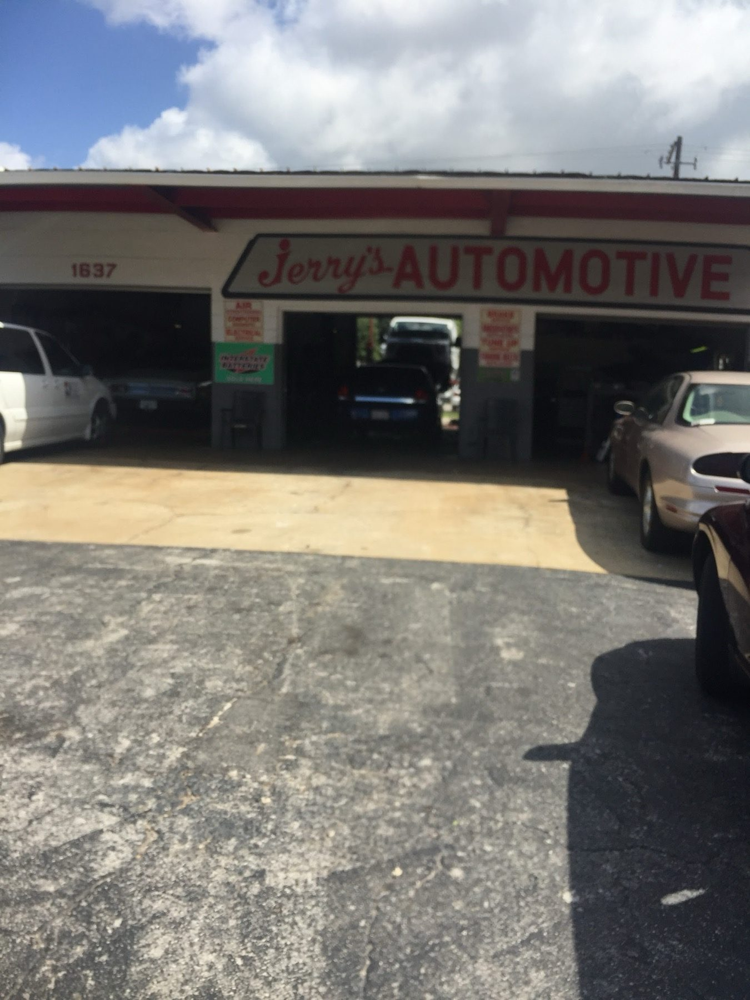
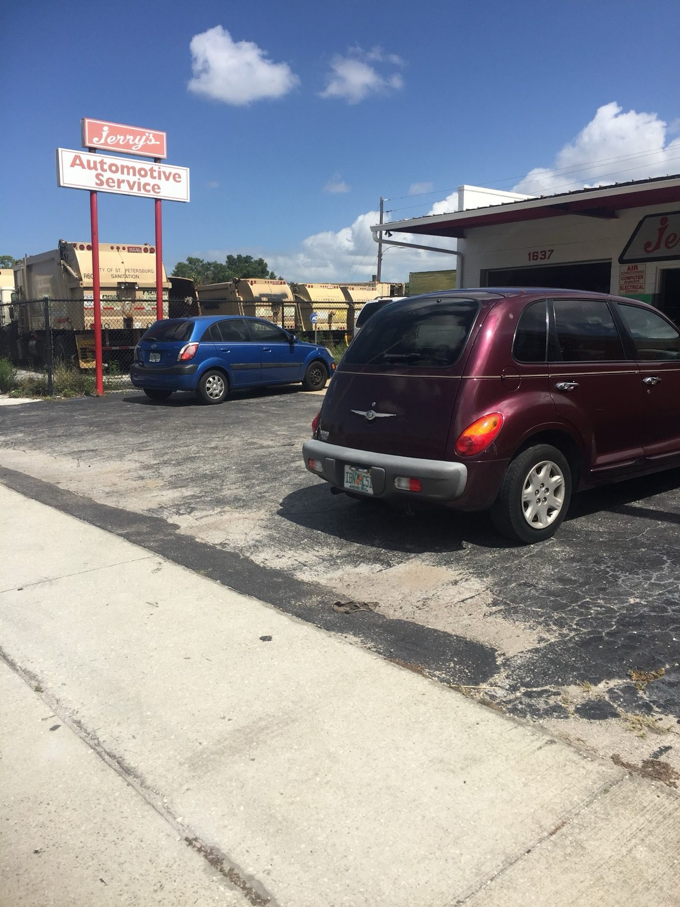

Auto repair · St. Petersburg, FL
Honest repairs, fair prices.
Brakes, diagnostics, oil changes and more, fixed and quoted plain on 5th Avenue North.
Jerry's Automotive Services

JOB ESTIMATE
- Brake pads and rotors✓
- Diagnostics✓
- Oil change✓
- Air filter✓
- Fuel injector repair✓
- Tire repair✓
TOTALWE CALL FIRST
** Plain answers **
4.9/5 · 117 Google REVIEWS
THANK YOU. COME AGAIN.
Itemised
Brakes, tires, diagnostics
Everyday repairs and maintenance for St. Pete drivers.
Jerry's
SERVICES
- 1
Brakes
✓Pad and rotor replacement.
- Pads
- Rotors
- 2
Diagnostics
✓Finding out what the car needs before the work starts.
- Scan
- Inspection
- 3
Oil changes
✓Oil changes and air filters.
- Oil change
- Air filter
- 4
Fuel system
✓Fuel injector repair.
- Fuel injectors
- 5
Tire repair
✓Punctures and tire repair.
- Flat repair
- 6
General repairs
✓The everyday repairs a neighborhood car needs.
- Maintenance
- Repairs
TOTALWE CALL FIRST
Customer copies
Reviews, word for word
4.9 / 5 from 117 Google reviews
CUSTOMER COPY
I found Jerry’s from a discussing online about “the most honest mechanics in St. Pete” and his name kept coming up. Well I can say the same thing first hand. Had my car in the shop at 7am and out by 4:30pm full fixed! Gave a fair price, told me the things that didn’t need fixed, and just fixed what needed to be fixed, and off I went. How all mechanic shops should be, but aren’t.
SIGNED: Anthony R.
CUSTOMER COPY
I did everything by Phone via long distance. The guys at the shop were very transparent with what the car needed to be done. The prices were extremely reasonable, and the car was finished on time as promised. Could not be happier with the service received there on behalf of my sister-in-law.
SIGNED: Billy C.
CUSTOMER COPY
⭐⭐⭐⭐⭐ Highly recommend Jerry’s Automotive! I brought my 4Runner in to have the brake pads and rotors replaced on all four tires, and they did an excellent job. The service was fast, professional, and everything was done right. My brakes feel great, and they had me back on the road quickly. Very happy with the service and definitely a shop I can trust. Great work and great experience overall!
SIGNED: sami I.

The shop
Three bays on 5th Ave N
Three bays under a red script sign on 5th Avenue North in St. Petersburg.
A neighborhood garage for brakes, oil changes, tire repair and the repairs in between.
OUR POLICY
- Fair price. Quoted plain, charged fair.
- Honest advice. We tell you what doesn't need fixing.
- On time. Done when we say it will be.
Find us
Find us on 5th Avenue North
1637 5th Ave N, St. Petersburg, FL 33713
Look for the red script sign over the bays and the pole sign by the road.